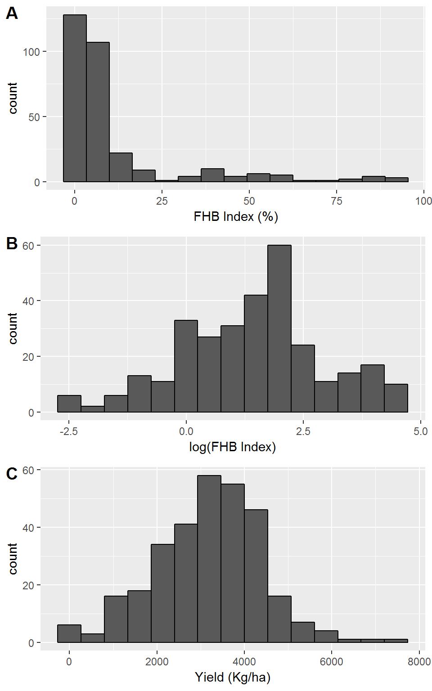
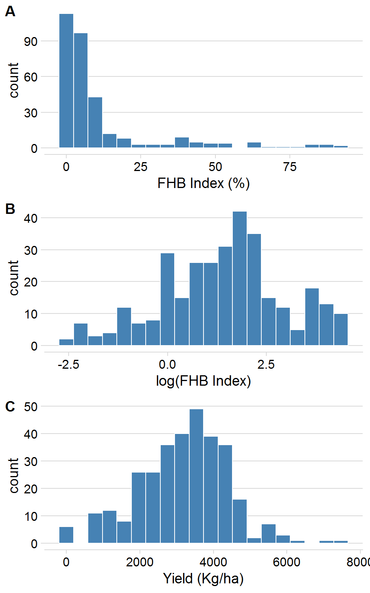
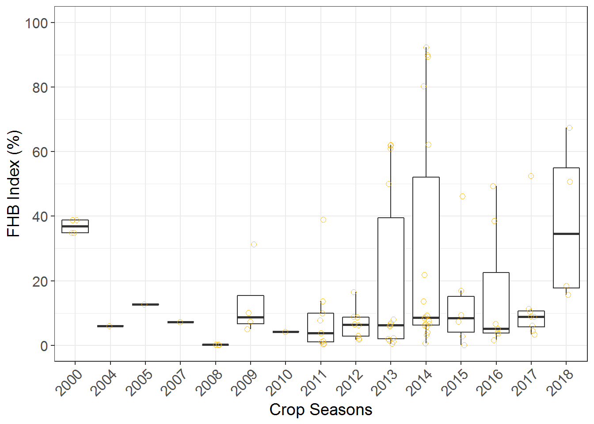
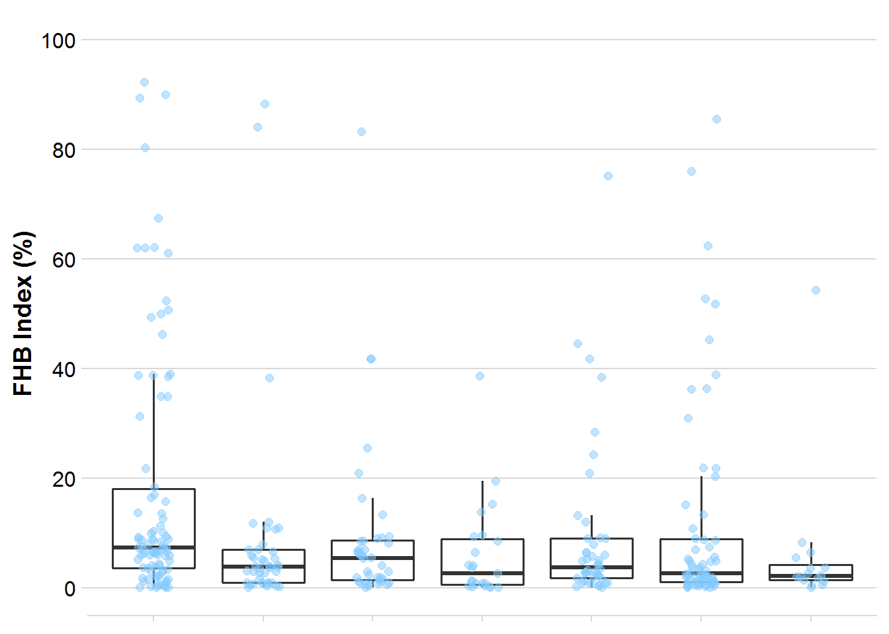
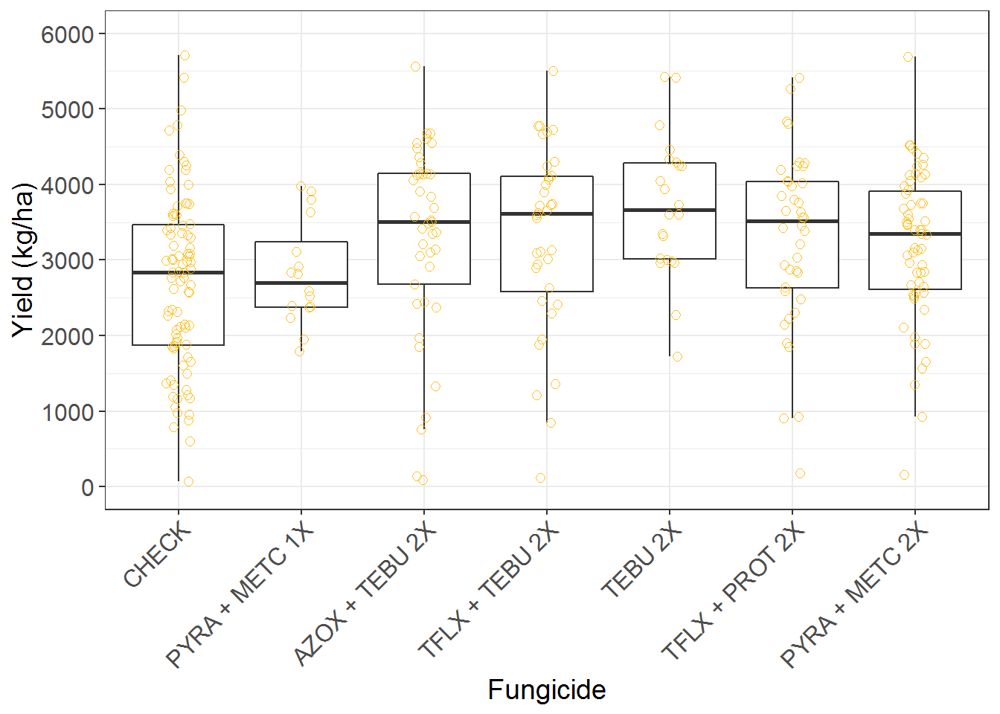
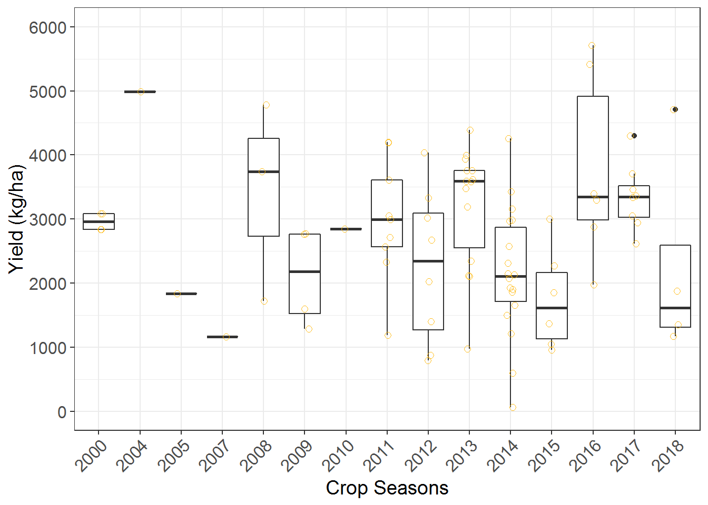
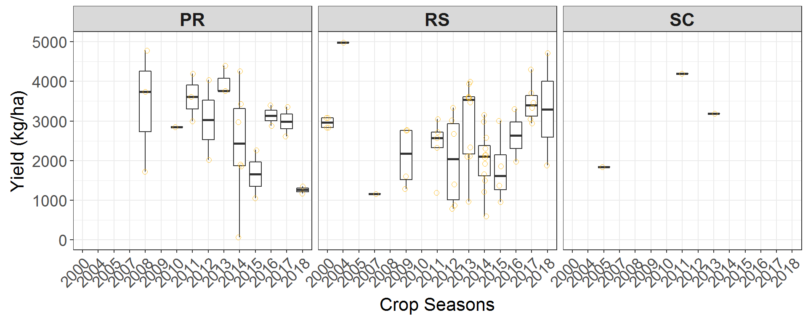
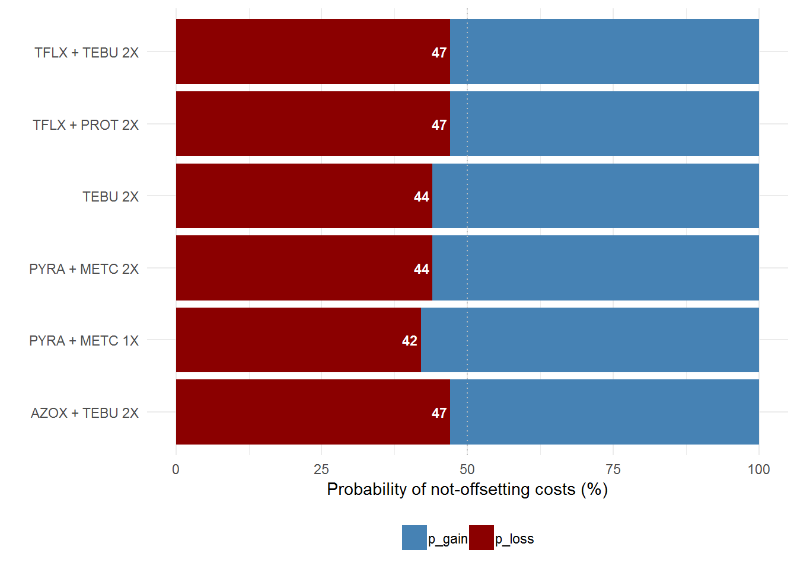

Plots
Histogramas
## Log of the Effect-sizes
fhb2 <- fhb2 %>%
mutate(
log_sev = log(sev),
log_yld = log(yld))
hist_log_sev <- ggplot(fhb2, aes(log_sev)) + geom_histogram(bins = 15, color = "black") + xlab("log(FHB Index)")
hist_sev <- ggplot(fhb2, aes(sev)) + geom_histogram(bins = 15, color = "black") + xlab("FHB Index (%)")
hist_yld <- ggplot(fhb2, aes(yld)) + geom_histogram(bins = 15, color = "black") + xlab("Yield (Kg/ha)")
library(cowplot)
hist_plot <- plot_grid(hist_sev, hist_log_sev, hist_yld, labels = c("A", "B", "C"), nrow = 3, align = "V")
hist_plot
ggsave("Figures/histograms.png", width = 5, height = 8, dpi = 300)Boxplots
Severity
fhb <- fhb2
fhb$AI2 <- factor(fhb$AI2, levels = c("CHECK", "PYRA + METC 1X", "AZOX + TEBU 2X", "TFLX + TEBU 2X", "TEBU 2X", "TFLX + PROT 2X", "PYRA + METC 2X"))
box_sev <- ggplot(fhb, aes(AI2, sev)) +
geom_boxplot(size = 0.5, outlier.shape = NA, position=position_dodge(1))+
geom_jitter(width = 0.1, shape = 1, size = 2, color = "darkgoldenrod1", alpha = 0.9)+
labs(x = "Fungicide", y = "FHB Index (%)") +
scale_y_continuous(breaks = c(0, 20, 40, 60, 80, 100), limits = c(0, 100)) +
theme_bw() +
theme(axis.text.x = element_text(angle = 45, hjust = 1, size=12),
axis.text.y = element_text(size=12),
axis.title=element_text(size=14),
legend.position = "none")
box_sev
sev_year <- fhb2 %>%
filter(AI2 == "CHECK") %>%
ggplot(aes(factor(year), sev_check)) +
geom_boxplot(size = 0.5, outlier.shape = NA, position=position_dodge(1)) +
geom_jitter(width = 0.1, shape = 1, size = 2, color = "darkgoldenrod1", alpha = 0.9) +
labs(x = "Crop Seasons", y = "FHB Index (%)") +
scale_y_continuous(breaks = c(0, 20, 40, 60, 80, 100), limits = c(0, 100))+
theme_bw() +
theme(axis.text.x = element_text(angle = 45, hjust = 1, size=12),
axis.text.y = element_text(size=12),
axis.title=element_text(size=14),
legend.position = "none")
sev_year
library(cowplot)
box_year <- plot_grid(sev_year, box_sev, labels = c("A", "B"), ncol = 2, align = "h", rel_widths = c(1, 1))
ggsave("Figures/Box_sev.png", width = 8, height = 5, dpi = 300)State
sev_year <- fhb2 %>%
filter(AI2 == "CHECK") %>%
#filter(state!="SC") %>%
ggplot(aes(factor(year), sev_check)) +
geom_boxplot(size = 0.5, outlier.shape = NA, position=position_dodge(1)) +
geom_jitter(width = 0.1, shape = 1, size = 2, color = "darkgoldenrod", alpha = 0.9) +
labs(x = "Crop Seasons", y = "FHB Index (%)") +
scale_y_continuous(breaks = c(0, 20, 40, 60, 80, 100), limits = c(0, 100))+
theme_bw() +
theme(axis.text.x = element_text(angle = 45, hjust = 1, size=14),
axis.text.y = element_text(size=14),
axis.title=element_text(size=16),
legend.position = "none",
strip.text = element_text(size = 16, face = "bold"))+
facet_wrap(~state)
sev_year
ggsave("Figures/Box_state.png", width = 12, height = 4, dpi = 300)Yield
fhb <- fhb2
fhb$AI2 <- factor(fhb$AI2, levels = c("CHECK", "PYRA + METC 1X", "AZOX + TEBU 2X", "TFLX + TEBU 2X","TEBU 2X", "TFLX + PROT 2X", "PYRA + METC 2X"))
box_yld <- ggplot(fhb, aes(AI2, yld)) +
geom_boxplot(size = 0.5, outlier.shape = NA) +
geom_jitter(width = 0.1, shape = 1, size = 2,color = "darkgoldenrod1", alpha = 0.9) +
labs(x = "Fungicide", y = "Yield (kg/ha)") +
scale_y_continuous(breaks = c(0,1000,2000,3000,4000,5000, 6000), limits = c(0, 6000))+
theme_bw() +
theme(axis.text.x = element_text(angle = 45, hjust = 1, size=12),
axis.text.y = element_text(size=12),
axis.title=element_text(size=14),
legend.position = "none")
box_yld
yld_year <- fhb2 %>%
filter(AI2 == "CHECK") %>%
#filter(state!="SC") %>%
ggplot(aes(factor(year), yld_check), outlier.shape = NA,) +
geom_boxplot(size = 0.5) +
geom_jitter(width = 0.1, shape = 1, size = 2, color = "darkgoldenrod1", alpha = 0.9) +
labs(x = "Crop Seasons", y = "Yield (kg/ha)") +
scale_y_continuous(breaks = c(0,1000,2000,3000,4000,5000, 6000), limits = c(0, 6000))+
theme_bw() +
theme(axis.text.x = element_text(angle = 45, hjust = 1, size=12),
axis.text.y = element_text(size=12),
axis.title=element_text(size=14),
legend.position = "none")
yld_year
library(cowplot)
box_year <- plot_grid(yld_year, box_yld, labels = c("A", "B"), ncol = 2, align = "h", rel_widths = c(1, 1))
ggsave("Figures/Box_yld.png", width = 8, height = 5, dpi = 300)State
yld_year <- fhb2 %>%
filter(AI2 == "CHECK") %>%
#filter(state!="SC") %>%
ggplot(aes(factor(year), yld_check)) +
geom_boxplot(size = 0.5, outlier.shape = NA, position=position_dodge(1)) +
geom_jitter(width = 0.1, shape = 1, size = 2, color = "darkgoldenrod1", alpha = 0.9) +
labs(x = "Crop Seasons", y = "Yield (kg/ha)") +
scale_y_continuous(breaks = c(0,1000,2000,3000,4000,5000), limits = c(0, 5000))+
theme_bw() +
theme(axis.text.x = element_text(angle = 45, hjust = 1, size=14),
axis.text.y = element_text(size=14),
axis.title=element_text(size=16),
legend.position = "none",
strip.text = element_text(size = 16, face = "bold"))+
facet_wrap(~state)
yld_year## Warning: Removed 3 rows containing non-finite values (stat_boxplot).## Warning: Removed 3 rows containing missing values (geom_point).
ggsave("Figures/Box_yld_state.png", width = 10, height = 4, dpi = 300)## Warning: Removed 3 rows containing non-finite values (stat_boxplot).
## Warning: Removed 3 rows containing missing values (geom_point).Severity x Yield
library(cowplot)
library(ggrepel)
library(tidyverse)
efficacy <- read_csv("data/efficacy.csv")## Parsed with column specification:
## cols(
## efficacy = col_double(),
## eff_sup = col_double(),
## eff_inf = col_double(),
## fungicide = col_character()
## )efficacyyld <- read_csv("data/yld-response.csv")## Parsed with column specification:
## cols(
## fungicide = col_character(),
## yld = col_double(),
## yld_inf = col_double(),
## yld_sup = col_double()
## )yldeff_yld = left_join(efficacy, yld)## Joining, by = "fungicide"eff_yldset.seed(42)
gr1 <- ggplot(eff_yld,aes(efficacy, yld)) +
geom_errorbar(aes(ymin = yld_inf, ymax = yld_sup, color = fungicide), width = 0.4, size = 0.8) +
geom_errorbarh(aes(xmin = eff_inf,xmax = eff_sup, color = fungicide), height = 5, size = 0.8)+
scale_y_continuous(breaks=c(300, 350, 400, 450, 500, 550, 600, 650), limits=c(300,650))+
scale_x_continuous(breaks=c(30, 35, 40, 45, 50, 55, 60, 65, 70, 75), limits=c(30,75))+
labs(x = "FHB control (%)", y = "Yield difference (kg/ha)", color = "Fungicide")+
# geom_label_repel(aes(efficacy, yld, label = eff_yld$fungicide, fill = fungicide),
# size=4, color = 'black',label.size=0.15, fontface = 'bold',
# box.padding = unit(3.5, "lines")) +
geom_point(aes(efficacy, yld, color = fungicide), size= 2.5) +
theme_bw()+
theme(axis.text=element_text(size=12),
axis.title=element_text(size=14),
legend.position = "top",
legend.title.align = 0.5,
legend.title = element_text(size=12, face = "bold"))
gr1
ggsave("Figures/sev_yld.png", width = 6, height = 5, dpi = 300)Ecomomic plot
fhb_economic <- gsheet2tbl("https://docs.google.com/spreadsheets/d/1Kh0474vS9xCxwud6RSZgr7VeWEF7FAnYDSi3EMb_bYs/edit#gid=877523999", sheetid = "economic_analysis")
fhb_economic <- fhb_economic %>%
mutate(tau = as.numeric(tau),
D = as.numeric(D))
prob <- function(C, P, tau, D) {
profit <- (D - (C / (P / 1000))) / sqrt(tau) # loss
prob_gain <- pnorm(profit)
prob_gain
}
for (i in 1:length(fhb_economic$C)) {
fhb_economic$p_gain[i] <- prob(C = fhb_economic$C[i], D = fhb_economic$D[i], tau = fhb_economic$tau[i], P = fhb_economic$P[i]) * 1
}
library(viridis)
library(tidyverse)
library(ggthemes)
dat <- fhb_economic %>%
mutate(p_gain = as.numeric(p_gain), p_gain = round(p_gain, 2))
dat$p_loss <- with(dat, (1 - p_gain))
dat <- dat %>%
select(1,6,8)
# Graph the results by fungicides
# Probability of not-offsetting costs
Fungicide <-c("AZOX + TEBU 2X", "PIRA + METC 2X", " TFLX + TEBU 2X", "TFLX + PROT 2X", "TEBU 2X", "PIRA + METC 1X")
library(tidyr)
dat <- dat %>%
gather(p, value, 2:3)
dat$value <- with(dat, (value*100))
g1 <- ggplot()+
geom_col(aes(x = Fungicide, y = value, fill = p), data = dat)+
geom_text(data = dat, aes(x = Fungicide, y = value, label = value, color = p), size = 3, fontface = "bold", hjust = 1.2, show.legend = FALSE) +
scale_color_manual(values = c("steelblue", "white"))+
scale_fill_manual(values = c("steelblue", "darkred"))+
theme_minimal()+
geom_hline(yintercept = 50, color = "grey", linetype = 3) +
theme(legend.position = "bottom", legend.title = element_blank(), legend.justification = "center")+
ylim(0,100)+
coord_flip()+
labs(y ="Probability of not-offsetting costs (%)", x = "")+
ggsave("Figures/probability_plot.png", width = 4.5, height=3)
g1
Tetris plot
fhb_tetris <- gsheet2tbl(
"https://docs.google.com/spreadsheets/d/1Kh0474vS9xCxwud6RSZgr7VeWEF7FAnYDSi3EMb_bYs/edit#gid=1373111570",
sheetid = "tetris"
)
fhb_tetris <- fhb_tetris %>%
mutate(
tau = as.numeric(tau),
D = as.numeric(D)
)
prob <- function(C, P, tau, D) {
profit <- (D - (C / (P / 1000))) / sqrt(tau) # loss
prob_gain <- pnorm(profit)
prob_gain
}
for (i in 1:length(fhb_tetris$C)) {
fhb_tetris$breacking_even[i] <- prob(C = fhb_tetris$C[i], D = fhb_tetris$D[i], tau = fhb_tetris$tau[i], P = fhb_tetris$P[i]) * 100
}
library(viridis)
library(tidyverse)
library(ggthemes)
dat <- fhb_tetris %>%
mutate(
breacking_even = as.numeric(breacking_even),
breacking_even = round(breacking_even, 1)
)
dat %>%
mutate(breacking_even1 = case_when(
breacking_even >= 75 ~ "p \u2265 75 ",
breacking_even < 75 & breacking_even >= 65 ~ "65 \u2264 p < 75 ",
breacking_even < 65 & breacking_even >= 55 ~ "55 \u2264 p < 65 ",
breacking_even < 55 & breacking_even >= 45 ~ "45 \u2264 p < 55 ",
breacking_even < 45 ~ "0 \u2264 p < 45 "
)) %>%
ggplot(aes(factor(C), factor(P), z = breacking_even1, fill = breacking_even1, label = breacking_even1)) +
geom_tile(color = "white", size = 0.5) +
scale_fill_viridis(discrete = T, option = "E", begin = 0, end = 1, name = "Probability (%)") +
scale_color_gradient(high = "white", low = "white") +
labs(x = "Fungicide + application cost (US$/ha)", y = "Wheat price (US$/ton) ", fill = "") +
# facet_wrap(~fungicide, ncol = 2, scales = "free", dir = "h")+
theme_minimal() +
facet_wrap(~ fungicide, scales = "free", nrow=3) +
theme(text = element_text(size = 14),
legend.justification = "center",
axis.text.x = element_text(size=14),
axis.text.y = element_text(size=14),
strip.text.x = element_text(size = 14, face = "bold"),
strip.text.y = element_text(size = 14, face = "bold"),
panel.grid.minor = element_line(colour = "white"),
panel.grid.major = element_line(colour = "white"),
legend.position = "bottom")
ggsave("Figures/tetris.png", width = 10, height = 10, dpi = 300)